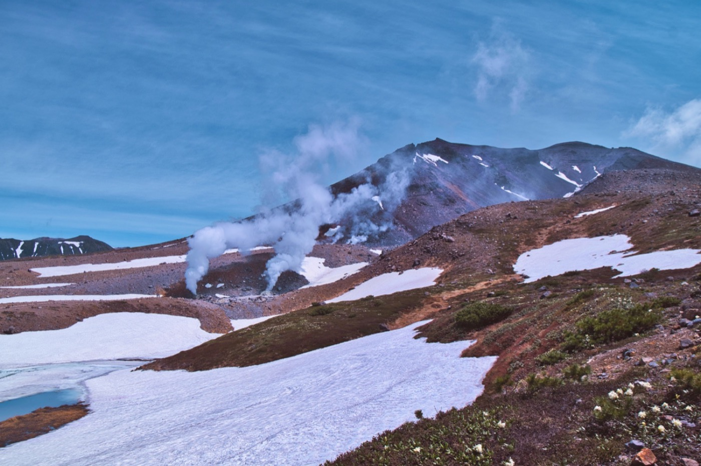
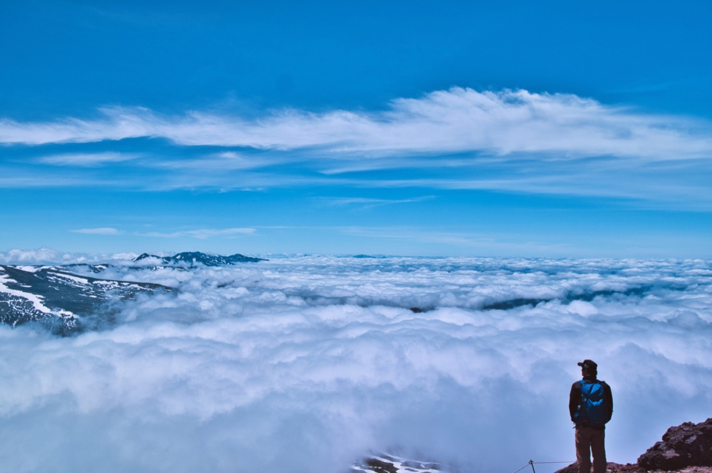
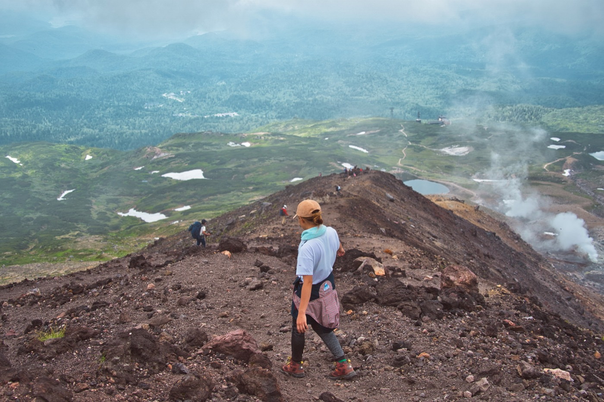

主峰 旭岳は北海道における最高峰で標高2291m。ロープウェイで手軽に登れるとあって多くの登山者が訪問します。山頂まで2時間程度のコースタイムで、ロープウェイ姿見駅から山頂まで比較的真っ直ぐな道ですが、気象条件は緯度の関係で本州の3000m級の山に匹敵します。真っ直ぐな道ですが、山の天気は変わりやすくガスがかかり視界を奪われることも登山道では多々あり、実際に遭難事故も過去には起きています。散策コースを出て登山に行くには経験や準備/装備が必要です。
散策路を歩き姿見の池展望台まで行き、そのすぐ上から旭岳山頂への登山道が始まります。 その年の雪解け状況にもよりますが、姿見の池上部や地獄谷には7月中旬頃まで残雪があり。晴れた日には、写真のように素晴らしい景色を横目に登山が始まります。街では日に日に暑さを増しす7月中旬、旭岳はまだまだ涼しい風が吹きます。

登山道は山頂までずっとガレ場の急登が続く。トレースがついておりその上は比較的登りやすいが、すれ違い様等にトレースから外れる際は、石を下に転がさないように注意が必要だ。
登っていると下ばかり見てしまうが、後ろを振り返ると、運が良いと雲海を見ることができる。残雪時期には晴れていれば、緑と残雪のゼブラ模様を見ることがで出来るだろう。

旭岳山頂 標高2291m。北海道最高峰の地からは360°のパノラマが展望でき、登頂の疲れを吹き飛ばしてくれる。 山頂のスペース広く平らなため、風が強くなければ絶景を楽しみながら昼食を取ることが出来る。
がれ場で足元を取られやすいので、下山は登りより注意が必要だが、カムイミンタラ（神々の遊ぶ庭）を常に眼下に見ながら下山できる。